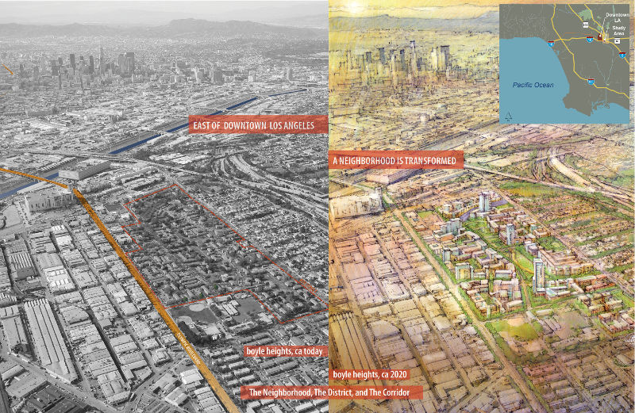
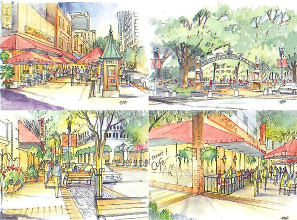
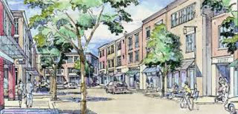
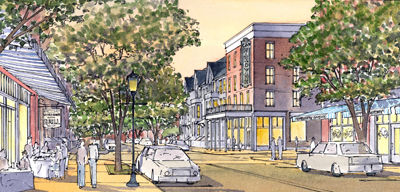

"La accesibilidad física y la posibilidad de encuentro son más que nunca los principales valores de las zonas urbanas."
François Ascher (2001: 59)
En los años 60’s, los estadounidenses vivieron una situación con problemas similares a los que se presentan actualmente en muchas ciudades de México: enormes masas habitacionales al margen de los servicios, comercio y fuentes de trabajo; zonas privadas en las que para acceder o salir es necesario el automóvil, fomentando el uso del mismo, lo que como consecuencia provoca degradación de la calidad de vida local y ambiental, efectos adversos a salud, entre otros.
Sin embargo, la evolución de las necesidades, de las formas de pensar y actuar, de las relaciones sociales, el desarrollo de nuevas ciencias y tecnologías y los cambios del medio ambiente y la naturaleza, la complejidad y escala de los desafíos colectivos, poco a poco dan lugar a una nueva forma de hacer ciudad:
...Una casa a no más de cinco minutos de la oficina, a donde puedas llegar caminando; una tiendita en la esquina y un dueño que te salude cuando pases; un buen café a tres cuadras con un ambiente agradable; un gran parque y muchos árboles que den sombra todo el año y que propicien la sana convivencia de los vecinos; un centro comercial; una escuela en la colonia para que tus hijos vayan a la escuela sin peligro; un hospital para que en cualquier emergencia te puedan atender en 10 minutos...

Esta imagen describe una colonia popular de los Estados Unidos, con bases asentadas teóricamente en el “nuevo urbanismo”. Un urbanismo que propone una ciudad más humana, equilibrada, eficiente y sustentable, en que el ser humano y sus necesidades fisiológicas y psicológicas individuales sean prioridad y que estas sean coherentes con la organización de su territorio, desarrollando noción de los límites, más allá de los económicos; una ciudad donde el peatón sea el protagonista y todo se adapte a su escala para elevar la calidad de vida, un desarrollo económico, social y ecológico equilibrado y sostenible, una gobernanza participativa, una gestión prudente y reflexiva de los recursos naturales y un buen aprovechamiento del tiempo de los ciudadanos.
Podremos observar en lugares como Seaside, Calgary o Kentlands, que al incorporar todos estos principios tienen como resultado alta calidad de vida y lugares que enriquecen, elevan e inspiran el espíritu humano.

Los diez principios básicos del nuevo urbanismo propuestos como las principales líneas de acción que tejen esta corriente son:
- Urbanismo caminable
- Ciudad diversa
- Uso mixto
- Sustentabilidad
- Accesibilidad
- Calidad de diseño
- Estructura pública de barrio
- Ciudad compacta
- Movilidad amable
- Diseño participativo
Estos principios pueden ser aplicables a cualquier escala con las siguientes condiciones:
- Regional: con estrategias integrales metropolitanas para solucionar problemas de límites de jurisdicción, con bordes o límites claros y adaptable al contexto existente.
- Colonias o barrios: se identifican por ser caminables (500 mts es la distancia máxima), tener un centro y bordes definidos.
- La manzana, la calle o edificio: propone permeabilidad entre las edificaciones y las banquetas, haciendo de las calles sitios más seguros, ya que las calles respetan al usuario (peatón, al automóvil, ciclistas y a personas con capacidades diferentes).
Estos principios del nuevo urbanismo cuestionan la manera en que tratamos de dar solución a los problemas, copiando esquemas que no obedecen a nuestras necesidades y siguiendo un modelo urbano desfasado y contraproducente (Navarro, Iborra, Zaragoza, 2012/13). Nos ofrece una visión más crítica de la realidad urbana y cambios profundos en las formas de pensar, construir y gestionar las ciudades.
 